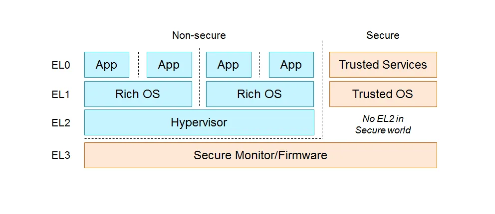

arm_vcpu
ARM 虚拟化简介
ARM 的硬件辅助虚拟化技术叫做 ARM-V (Virtualization) 技术，从 ARMv8 开始比较好的支持这种硬件辅助虚拟化技术。类似 X86 根/非根模式，ARM 引入多个异常级来控制资源访问权限。宿主机上 VMM 运行在 EL2 层，客户机操作系统运行在 EL1 层，应用程序运行在 EL0 层。
ARMv8 的异常级分为 4 级（EL0~EL3），权限也是从低到高。同时也分了两个 CPU 运行状态（Non-secure 和 Secure），顾名思义为了安全和非安全的运行态，此处不扩展。每一级运行的内容如下图所示：

运行在不同异常级最大的区别就是能够访问的寄存器组不同，同时也影响了某些硬件行为（比如对页表的 lookup）。运行在高异常级时可以访问低异常级的寄存器组，反之不行。 为了切换到更高的异常级（主动触发某个异常级的异常），需要主动执行特殊的指令： • Supervisor Call (SVC)。一般由 EL0 切换到 EL1 的指令，会进入 EL1 的异常向量表。 • Hypervisor Call (HVC) 。Non-secure EL1 切换到 EL2 的指令，会进入到 EL2 的异常向量表。 • Secure monitor Call (SMC) 。切换到 EL3 的指令，只有在 EL1、EL2 执行有效。
项目概述
arm_vcpu 是 axvisor 项目的重要组成部分，特别为 ARM 架构设计的虚拟 CPU 实现。该项目提供了在 ARM64 架构上实现虚拟机（VM）的底层组件，使操作系统或 hypervisor 能够创建和管理虚拟 CPU，进而运行客户操作系统。
核心组件结构
主要模块
项目包含以下核心模块：
- context_frame: 定义了 ARM64 CPU 上下文帧结构
- exception: 处理异常和 VM 退出
- exception_utils: 提供异常处理的工具函数
- pcpu: 物理 CPU 相关功能的实现
- smc: 安全监视器调用实现
- vcpu: 虚拟 CPU 的核心实现
核心数据结构
Aarch64ContextFrame (src/context_frame.rs)
#![allow(unused)] fn main() { pub struct Aarch64ContextFrame { pub gpr: [u64; 31], // 通用寄存器 pub sp_el0: u64, // EL0 栈指针 pub elr: u64, // 异常链接寄存器 pub spsr: u64, // 保存的程序状态寄存器 } }
这个结构体代表了一个完整的 ARM64 CPU 上下文，包含了 CPU 的通用寄存器、栈指针、返回地址和状态标志。当发生 VM 切换时，这些寄存器需要保存和恢复。
GuestSystemRegisters (src/context_frame.rs)
#![allow(unused)] fn main() { pub struct GuestSystemRegisters { // 通用定时器相关寄存器 pub cntvoff_el2: u64, cntp_cval_el0: u64, ... // 虚拟ID寄存器 vpidr_el2: u32, pub vmpidr_el2: u64, // EL1/EL0 寄存器 pub sp_el0: u64, sp_el1: u64, ... // Hypervisor上下文 pub hcr_el2: u64, pub vttbr_el2: u64, ... } }
这个结构体包含了客户虚拟机的系统寄存器状态，包括定时器寄存器、CPU ID、异常控制、内存管理等。这些寄存器在 VM 进入/退出时需要保存和恢复。
Aarch64VCpu (src/vcpu.rs)
#![allow(unused)] fn main() { pub struct Aarch64VCpu<H: AxVCpuHal> { ctx: TrapFrame, host_stack_top: u64, guest_system_regs: GuestSystemRegisters, mpidr: u64, _phantom: PhantomData<H>, } }
Aarch64VCpu 是实现虚拟 CPU 的核心结构体，包含了虚拟 CPU 的完整状态：
ctx: 保存客户 VM 的 CPU 上下文host_stack_top: 主机栈顶指针，用于 VM 退出时恢复主机上下文guest_system_regs: 客户系统寄存器状态mpidr: 多处理器 ID 寄存器值
关键功能实现
VCPU 初始化和运行
VCPU 的初始化在 Aarch64VCpu::new() 方法中实现，设置初始化 CPU 寄存器和系统状态：
#![allow(unused)] fn main() { fn new(config: Self::CreateConfig) -> AxResult<Self> { let mut ctx = TrapFrame::default(); ctx.set_argument(config.dtb_addr); Ok(Self { ctx, host_stack_top: 0, guest_system_regs: GuestSystemRegisters::default(), mpidr: config.mpidr_el1, _phantom: PhantomData, }) } }
VCPU 的运行在 run() 方法中实现：
#![allow(unused)] fn main() { fn run(&mut self) -> AxResult<AxVCpuExitReason> { let exit_reson = unsafe { // 保存主机 SP_EL0 到上下文中 save_host_sp_el0(); self.restore_vm_system_regs(); self.run_guest() }; let trap_kind = TrapKind::try_from(exit_reson as u8).expect("Invalid TrapKind"); self.vmexit_handler(trap_kind) } }
异常处理机制
异常处理是通过异常向量表和处理函数实现的。异常向量表在 exception.S 中定义：
.section .text
.p2align 11
.global exception_vector_base_vcpu
exception_vector_base_vcpu:
// current EL, with SP_EL0
INVALID_EXCP_EL2 0 0
...
// lower EL, aarch64
HANDLE_LOWER_SYNC_VCPU
HANDLE_LOWER_IRQ_VCPU
...
同步异常处理在 handle_exception_sync 函数中实现：
#![allow(unused)] fn main() { pub fn handle_exception_sync(ctx: &mut TrapFrame) -> AxResult<AxVCpuExitReason> { match exception_class() { Some(ESR_EL2::EC::Value::DataAbortLowerEL) => { let elr = ctx.exception_pc(); let val = elr + exception_next_instruction_step(); ctx.set_exception_pc(val); handle_data_abort(ctx) } Some(ESR_EL2::EC::Value::HVC64) => { // 处理超级调用 ... } ... } } }
VM 进入/退出流程
VM 进入是通过 run_guest() 函数实现的：
#![allow(unused)] fn main() { unsafe fn run_guest(&mut self) -> usize { unsafe { core::arch::asm!( // 保存主机上下文 save_regs_to_stack!(), "mov x9, sp", "mov x10, x11", // 保存当前主机栈顶到 Aarch64VCpu 结构中 "str x9, [x10]", "mov x0, x11", "b context_vm_entry", in("x11") &self.host_stack_top as *const _ as usize, options(nostack) ); } // 返回值，实际返回值是在 x0 中，当 return_run_guest 返回时 0 } }
VM 退出是通过 vmexit_handler() 函数处理的：
#![allow(unused)] fn main() { fn vmexit_handler(&mut self, exit_reason: TrapKind) -> AxResult<AxVCpuExitReason> { unsafe { // 保存客户系统寄存器 self.guest_system_regs.store(); // 保存客户 SP_EL0 到 Aarch64VCpu 结构中 self.ctx.sp_el0 = self.guest_system_regs.sp_el0; // 恢复主机的 SP_EL0 restore_host_sp_el0(); } match exit_reason { TrapKind::Synchronous => handle_exception_sync(&mut self.ctx), TrapKind::Irq => Ok(AxVCpuExitReason::ExternalInterrupt { vector: H::irq_fetch() as _, }), _ => panic!("Unhandled exception {:?}", exit_reason), } } }
物理 CPU 初始化
物理 CPU 初始化在 Aarch64PerCpu::new() 和 hardware_enable() 方法中实现：
#![allow(unused)] fn main() { fn hardware_enable(&mut self) -> AxResult { // 首先保存原始异常向量表基址 unsafe { ORI_EXCEPTION_VECTOR_BASE.write_current_raw(VBAR_EL2.get() as usize) } // 设置当前 VBAR_EL2 为本 crate 中定义的 exception_vector_base_vcpu VBAR_EL2.set(exception_vector_base_vcpu as usize as _); // 启用虚拟化功能 HCR_EL2.modify( HCR_EL2::VM::Enable + HCR_EL2::RW::EL1IsAarch64 + HCR_EL2::IMO::EnableVirtualIRQ + HCR_EL2::FMO::EnableVirtualFIQ + HCR_EL2::TSC::EnableTrapEl1SmcToEl2, ); Ok(()) } }
关键机制解析
上下文切换机制
上下文切换是虚拟化的核心机制，包括以下步骤：
-
VM 进入时:
- 保存主机上下文（通用寄存器、栈指针）
- 加载客户 VM 上下文和系统寄存器
- 通过
eret指令切换到 VM 执行
-
VM 退出时:
- 通过异常向量捕获退出事件
- 保存客户 VM 上下文和系统寄存器
- 恢复主机上下文
- 返回 VM 退出原因
内存管理
虚拟 CPU 的内存管理主要通过 EPT (Extended Page Table) 或 ARM 中的第二阶段地址转换实现：
#![allow(unused)] fn main() { fn set_ept_root(&mut self, ept_root: HostPhysAddr) -> AxResult { debug!("set vcpu ept root:{:#x}", ept_root); self.guest_system_regs.vttbr_el2 = ept_root.as_usize() as u64; Ok(()) } }
内存访问异常由 handle_data_abort 处理：
#![allow(unused)] fn main() { fn handle_data_abort(context_frame: &mut TrapFrame) -> AxResult<AxVCpuExitReason> { let addr = exception_fault_addr()?; let access_width = exception_data_abort_access_width(); let is_write = exception_data_abort_access_is_write(); let reg = exception_data_abort_access_reg(); let reg_width = exception_data_abort_access_reg_width(); // ... if is_write { return Ok(AxVCpuExitReason::MmioWrite { addr, width, data: context_frame.gpr(reg) as u64, }); } Ok(AxVCpuExitReason::MmioRead { addr, width, reg, reg_width, }) } }
中断和异常处理
中断和异常处理通过异常向量表和对应的处理函数实现。系统提供了以下主要异常处理路径：
- 同步异常处理：处理客户 VM 的指令执行异常
- 中断处理：处理物理中断并将其路由到适当的目标（主机或客户 VM）
- SMC 调用处理：安全监控器调用的处理
附 1：参考资料
ARM 官方虚拟化手册：